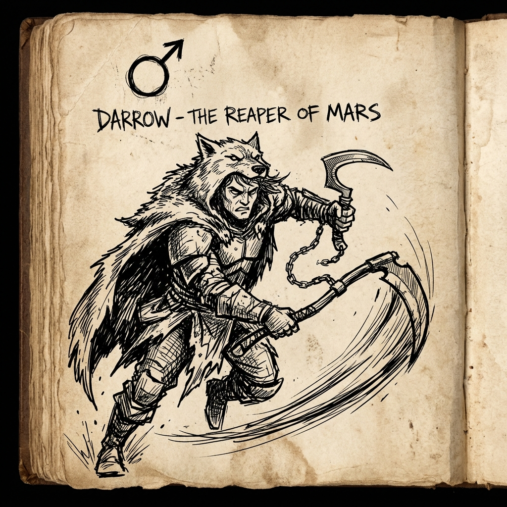

The Blood and Soil of Mars
Red Rising begins in the suffocating helium-3 mines of Mars. Darrow is a Helldiver, convinced by the propaganda of the Society that Reds are sacrificing themselves to pioneer the terraforming of the Red Planet.
When he discovers that humanity has already inhabited Mars for centuries in opulent, decadent floating cities, the lie detonates.

The SlingBlade Philosophy
Darrow's journey into the Institute—carved into a Gold, adopting their aristocratic dialect, and wielding their curved razors—is a masterclass in asymmetrical warfare:
- Never play by their rules: When the Golds expect classical duels, Darrow flips the chessboard.
- Loyalty forged in blood: Sevro, Cassius, Mustang, and Ragnar become brothers and sisters not through bloodline, but through shared sacrifice.
- The cost of revolution: You cannot break a system built on three centuries of slavery without bleeding on your own hands.